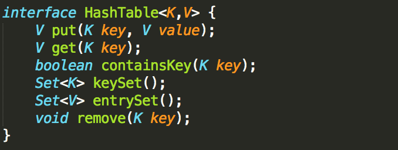
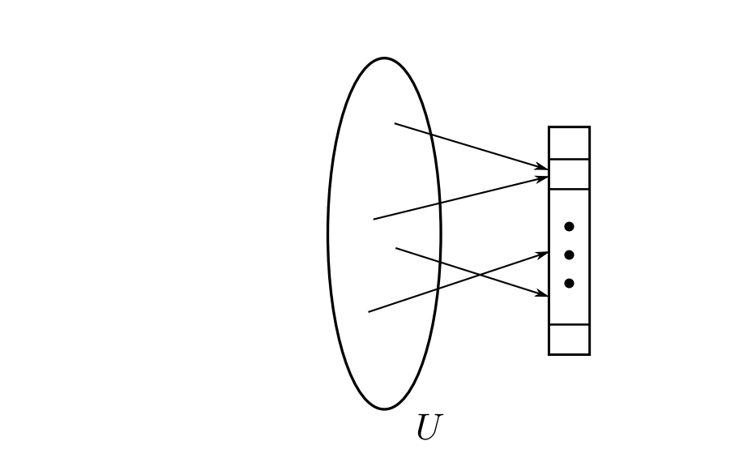
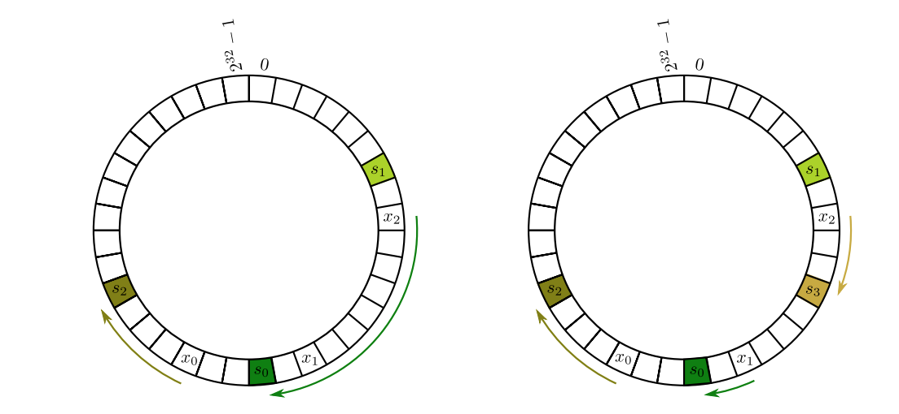

Algorithms & distributed systems
Hashing, distributed caching
Consistent Hashing
A HashTable or a dictionary is a data structure that supports operations for inserting, searching and removing any key. If implemented correctly, all the operations should take O(1) time.
Given a key, a Hash table maps that key to a particular 'bucket', and the mapping is done by a 'hash function'. A hash function, h(k), maps a key onto a universe U out of which the bucket is chosen. A good hash function has the following properties:

- It is deterministic. This means it should always hash some key 'k' to the same bucket
- It is fast
- It does not hash similar keys to the same bucket (handles collision quite well)
- The hash function should behave like a random function. This means it should spread the keys uniformly across each bucket
Now what if the bucket size changes? A situation may arise where we might have to add more buckets or reduce the number of buckets. In other words, the size of the universe the buckets are being selected from is changing. Whenever that happens, The hash function needs to generate a new hash for each key in order to map each key to a new bucket. This situtation has practical usecases particulary in distributed caching. For example, We may want to map 'k' keys to 'n' distributed caches. However, when scaling up the caches or when removing a node, we face the issue of having to recompute the hash of every key, and that can be costly. This is where consistent hashing offers a better approach.
So to re-iterate, when adding more nodes or removing a nodes from the cache cluster, and assuming there are 'k' keys, the goal is to minimize the number of keys that need to be re-mapped.
The main idea behind consistent hashing is to introduce a third space. What a regular hash function does is map a key 'k' selected from some Universe to a universe of nodes. Instead, the hash function maps both the key and the node to a bucket in the third universe.
Once each key and node is mapped to a bucket in the third universe, the goal would be to find a bucket in the third universe that has a node to map the key. In other words, hash the key 'k' to the third universe, then find a bucket closest to the key's bucket that contains a node. To better help visualize this concept, imagine both the keys and nodes are mapped to a 32 bit space. Then wrap the 32 bit space around so that it is cyclic. The cells in the circle represent buckets in the third universe.
Next, as showed in the image above, each node is mapped to a bucket in the 32 bit space. Now that the nodes are mapped, next step is to map the keys to a node. To do that, a key gets mapped to some bucket in the 32 bit space, and then move in clockwise direction starting from the bucket the key just got hashed to until a bucket with a node is found. So the key will be mapped to that bucket.
Now, if node 's3' above goes down, then all the keys in node 's3' will be re-mapped to the next node in the 32 bit space. So no need to re-map every key. Simillarly if a new node is added and mapped to a bucket between nodes 's0' & 's2', then only keys that are mapped to buckets between 's0' & the new node will need to be re-mapped. This helps optimize load balancing among caches. Depending on the distribution of the keys, more optimizations can be made to even out the load balancing by introducing what are known as 'virtual replicas' on the third universe.